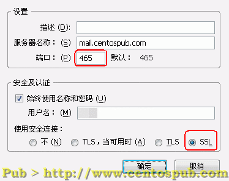
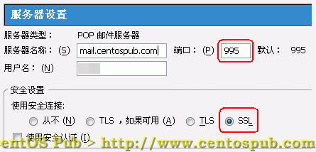
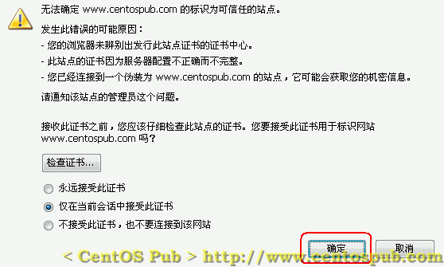

| 前 言 | 预 习 | 配置详解 | 技术论坛 | 最近更新 | About |
<<< 返回［配置详解］索引
< 用 SSL 对邮件加密的支持 > （最近更新日：2006/10/18）
|
|
|
| vi /etc/postfix/main.cf ← 编辑 Postfix 配置文件，在文尾添加如下行： smtpd_use_tls = yes smtpd_tls_session_cache_database = btree:/etc/postfix/smtpd_scache smtpd_tls_cert_file = /etc/httpd/conf/ssl.crt/server.crt smtpd_tls_key_file = /etc/httpd/conf/ssl.key/server.key |
| vi /etc/postfix/master.cf ← 编辑 master.cf smtp inet n - n - - smtpd ← 找到此行，在行首加“#” ↓ #smtp inet n - n - - smtpd ← 改为此状态，禁用SMTP协议 #smtps inet n - n - - smtpd ← 找到此行，去掉行首的“#” ↓ smtps inet n - n - - smtpd ← 改为此状态，使用SMTPS协议 # -o smtpd_tls_wrappermode=yes -o smtpd_sasl_auth_enable=yes ← 找到此行，去掉行首的“#” ↓ -o smtpd_tls_wrappermode=yes -o smtpd_sasl_auth_enable=yes ← 改为此状态 |
| vi /etc/dovecot.conf ← 编辑 Dovecot 的配置文件 protocols = imap pop3 ← 找到此行，将“=”后面的部分改为如下状态 ↓ protocols = imaps pop3s ← 改为此状态，让其只支持imaps和pop3s协议 #ssl_disable = no ← 找到此行，去掉行首的“#” ↓ ssl_disable = no ← 改为此状态，让其支持 SSL 及 TLS #ssl_cert_file = /usr/share/ssl/certs/dovecot.pem ← 找到此行，去掉行首的“#”，并指定证书所在位置 ↓ ssl_cert_file =/etc/httpd/conf/ssl.crt/server.crt ← 改为此状态，指定其证书为 Apache 的证书 ↓ #ssl_key_file = /usr/share/ssl/private/dovecot.pem ← 找到此行，去掉行首的“#”，并指定密钥所在位置 ssl_key_file = /etc/httpd/conf/ssl.key/server.key ← 改为此状态，指定其密钥为 Apache 的密钥 |
| vi /etc/sysconfig/iptables ← 编辑防火墙规则 ← 找到此行，接着添加如下行： -A RH-Firewall-1-INPUT -m state --state NEW -m tcp -p tcp --dport 465 -j ACCEPT ← 允许SMTPS的465号端口 -A RH-Firewall-1-INPUT -m state --state NEW -m tcp -p tcp --dport 995 -j ACCEPT ← 允许POP3S的995号端口 -A RH-Firewall-1-INPUT -m state --state NEW -m tcp -p tcp --dport 993 -j ACCEPT ← 允许IMAPS的993号端口 |
|
|
这里，邮件客户端的设置以 Thunderbird 为例。
* SMTP 方面：
在 SMTP 服务器设置中，选择 SSL 方式。使用 Thunderbird 的情况下，选择 SSL 后，端口号会自动变成 465。其它邮件客户端软件请根据实际情况正确设置。

* POP 方面：
在 POP 服务器设置中，选择 SSL 方式。使用 Thunderbird 的情况下，选择 SSL 后，端口号会自动变成 995。其它邮件客户端软件请根据实际情况正确设置。

在发送或接收邮件时，会弹出服务器证书相关的信息，如下：

选择“确定”接受服务器证书。

再次点击”确定“信任此服务器证书。
最后发送邮件到服务器的相应用户，并确认能够接收。
| <<< 返回顶端 |